")
")
Sie können Makrotexte definieren, bearbeiten und löschen. Es ist möglich, beliebig viele Makrotexte zu definieren und in der Zeichnung zu verwenden.
·Makrotexte werden zusammen mit der Zeichnung gespeichert und stehen ausschließlich in der Zeichnung zur Verfügung, in der sie definiert wurden. Ein Austausch zwischen Zeichnungen ist über die Export- und Importfunktion im Dialog möglich. Darüber hinaus können Makrotexte aus Microsoft Excel importiert bzw. nach Excel exportiert werden.
·Dynamische Makrotexte werden automatisch aus der aktuellen Zeichnung generiert. Sie können weder bearbeitet noch gelöscht werden.
·Die in der Tabelle markierten Makrotexte werden in der Zeichnung in der definierten Markierungsfarbe hervorgehoben; s. [Option | SysDat | Makrotexte]. Eine Mehrfachauswahl ist per Strg- oder Umschalttaste (Shift) möglich. Zusätzlich kann ein Makrotext direkt in der Zeichnung angeklickt werden, um ihn in der Tabelle zu markieren.
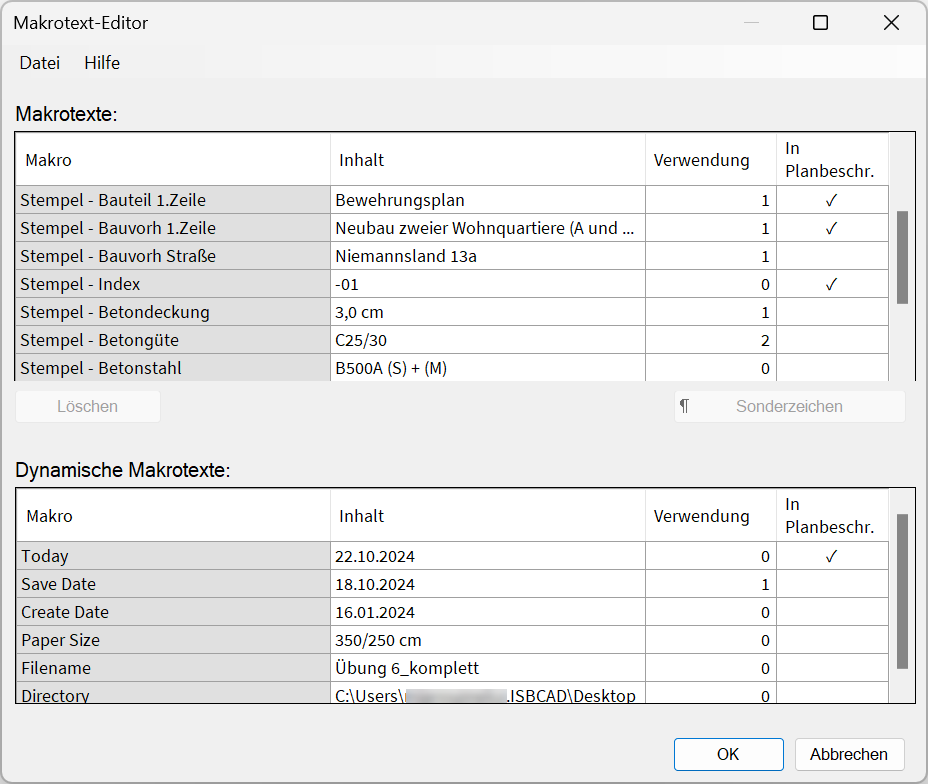 |
Makrotext definieren
§Klicken Sie in der Spalte Makro in eine leere Tabellenzelle. Nutzen Sie ggf. den Scrollbalken am rechten Dialogrand, um an das Tabellenende zu scrollen.
§Geben Sie die Bezeichnung für den Makrotext ein.
Dieses Spezialzeichen ist nicht erlaubt: "$". Leerzeichen können verwendet werden.
§Wechseln Sie mit der Tab-Taste in die benachbarte Zelle in der Spalte Inhalt oder klicken Sie die Zelle mit der Maus an.
§Geben Sie den Textinhalt ein und bestätigen Sie mit der Eingabetaste.
Sie können den Textinhalt auch zu einem späteren Zeitpunkt angeben und zunächst leer lassen, oder Sie können einen Platzhaltertext einfügen. Wird der Textinhalt nicht angegeben, kann der Makrotext trotzdem in der Zeichnung eingefügt werden. Der Makrotext ist dann an der eingefügten Stelle nicht sichtbar, wird aber durch eine Unterstreichung gekennzeichnet, wenn Sie sich in einer Funktion befinden, mit der Texte bearbeitet werden können. Sie können die Darstellung in den Systemdaten anpassen, s. [Option | SysDat | Makrotexte].
§Um Sonderzeichen einzufügen, klicken Sie auf Sonderzeichen. Bearbeiten Sie den Text im Dialog und klicken Sie auf OK.
§Definieren Sie ggf. weitere Makrotexte.
§Um die Definitionen zu übernehmen, schließen Sie den Dialog mit OK.
Makrotext bearbeiten
Sowohl die Bezeichnung der Makrotexte als auch die Textinhalte können geändert werden. In der Zeichnung und in Dialogfeldern werden die Texte automatisch aktualisiert.
§Klicken Sie in der Spalte Makro oder Inhalt einen Text an und tippen Sie den neuen Text ein.
Mit einem Doppelklick wird der Text markiert, und Sie können ihn über das Kontextmenü (Rechtsklick auf den markierten Eintrag) zum Beispiel kopieren oder ausschneiden, und an anderer Stelle einfügen.
§Bestätigen Sie die Eingabe mit der Eingabetaste oder wechseln Sie mit der Tab-Taste in die nächste Tabellenzelle.
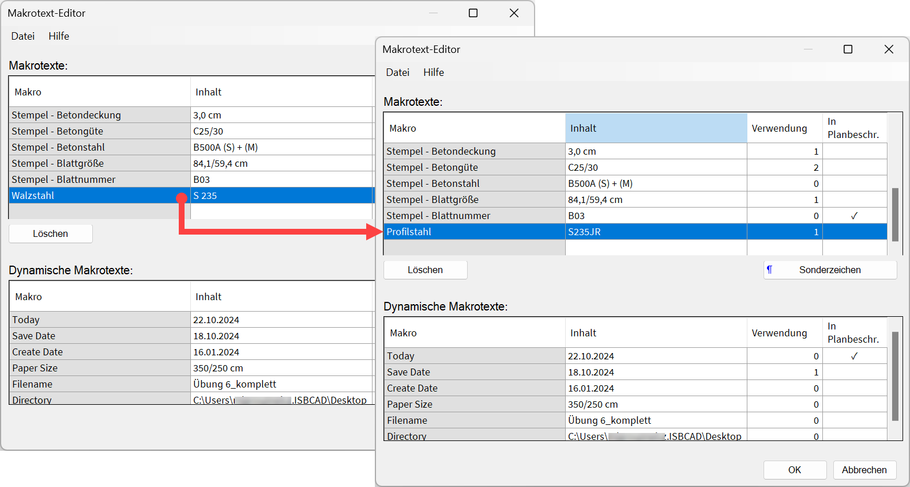 |
Makrotexte verschieben
Im Makrotext-Editor entspricht die Anordnung der benutzerdefinierten Makrotexte der Reihenfolge, in der sie in den Auswahllisten angezeigt werden, z. B. in [Konst 1 | Texte | zeichn]. Sie können die Anordnung ändern, indem Sie die Makrotexte sortieren.
§Verschieben Sie eine einzelne oder mehrere Tabellenzeilen an eine neue Position:
Einzelne Tabellenzeile |
·Halten Sie auf einer Tabellenzelle die linke Maustaste gedrückt, und ziehen Sie den Inhalt nach oben oder unten. Eine schwarze Linie zeigt Ihnen an, an welche Position die Zeile verschoben wird. ·Lassen Sie die Maustaste an der Position los, an die der Inhalt verschoben werden soll. |
Mehrere Tabellenzeilen |
·Um benachbarte Tabellenzeilen im Block auszuwählen: -Halten Sie die Umschalttaste gedrückt und klicken Sie die erste Zelle an. Klicken Sie anschließend die zweite Zelle an, um den Tabellenbereich zwischen den angeklickten Zellen auszuwählen. -Lassen Sie die Umschalttaste los. Die Zeilen bleiben markiert. ·Um nicht benachbarte Tabellenzeilen auszuwählen: -Halten Sie die Strg-Taste gedrückt, und wählen Sie die Makrotexte nacheinander aus. -Lassen Sie die Strg-Taste los. Die Zeilen bleiben markiert. ·Um die Tabellenzeilen zu verschieben: -Klicken Sie eine markierte Zelle an und halten Sie die linke Maustaste gedrückt. Ziehen Sie die Inhalte nach oben oder unten. Eine schwarze Linie zeigt Ihnen an, an welche Position die Zeilen verschoben werden. -Lassen Sie die Maustaste an der Position los, an die die Inhalte verschoben werden sollen. |
Durch das Löschen wird der Makrotext (Makro und Inhalt) aus dem Editor entfernt. An allen Stellen, an denen der Makrotext verwendet wurde, bleibt der zugewiesene Textinhalt als normaler Text stehen. Das Löschen dynamischer Makrotexte ist nicht möglich.
§Wählen Sie den oder die zu löschenden Makrotexte aus, indem Sie die gesamte Tabellenzeile markieren:
Einzelauswahl |
·Klicken Sie einen Makrotext an. |
Mehrfachauswahl |
·Um benachbarte Makrotexte im Block auszuwählen: -Halten Sie die Umschalttaste gedrückt und klicken Sie die erste Zeile an. Klicken Sie anschließend die zweite Zeile an, um den Tabellenbereich zwischen den angeklickten Zeilen auszuwählen. -Lassen Sie die Umschalttaste los. ·Um nicht benachbarte Makrotexte auszuwählen: -Halten Sie die Strg-Taste gedrückt und wählen Sie die Makrotexte aus. -Lassen Sie die Strg-Taste los. |
§Klicken Sie unter der Tabelle mit den benutzerdefinierten Makrotexten auf Löschen.
Makrotexte in eine isbmakro-Datei exportieren
Export der benuterzerdefinierten Makrotexte in einer isbmakro-Datei, um sie in anderen Zeichnungen verwenden zu können.
§Wechseln Sie zu [Konst 1 | Texte | MkrEdt], um den Makrotext-Editor zu öffnen.
Im Editor werden Ihnen alle benutzerdefinierten Makrotexte angezeigt.
§Klicken Sie auf Datei und anschließend auf Makrotexte exportieren.
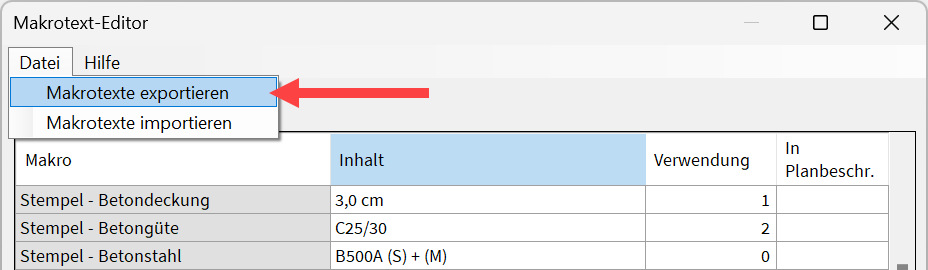 |
§Wählen Sie das Verzeichnis, in dem die Makrotext-Datei gespeichert werden soll.
§Geben Sie den Dateinamen ein.
§Klicken Sie abschließend auf Speichern.
Die isbmakro-Datei wird gespeichert. Diese Datei können Sie in einer anderen ISBCAD-Instanz importieren.
Makrotexte aus einer isbmakro-Datei importieren
Import einer isbmakro-Datei. Die importierten Makrotexte werden der aktuellen Liste hinzugefügt.
§Wechseln Sie zu [Konst 1 | Texte | MkrEdt], um den Makrotext-Editor zu öffnen.
§Klicken Sie auf Datei und anschließend auf Makrotexte importieren.
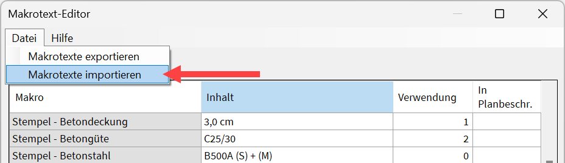 |
§Wählen Sie die isbmakro-Datei aus, die eingelesen werden soll, und klicken Sie auf Öffnen.
-Die Makrotexte werden importiert und der Liste im Makrotext-Editor hinzugefügt.
-Falls Makrotexte mit derselben Bezeichnung aber anderem Textinhalt importiert werden, siehe: Konflikte bei Makrotexten auflösen.
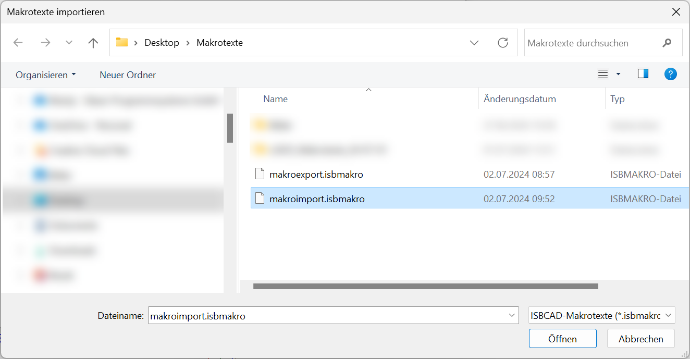 |
Makrotexte nach Excel übertragen
Sie können benutzerdefinierte Makrotexte nach Excel übertragen. Die Makrotexte werden automatisch zweispaltig eingefügt (Makrotext-Name/Textinhalt).
§Markieren Sie durch Anklicken einen Makrotext oder mehrere per Mehrfachselektion mit der Strg- oder Umschalttaste.
§Drücken Sie Strg+C, um die Makrotexte zu kopieren.
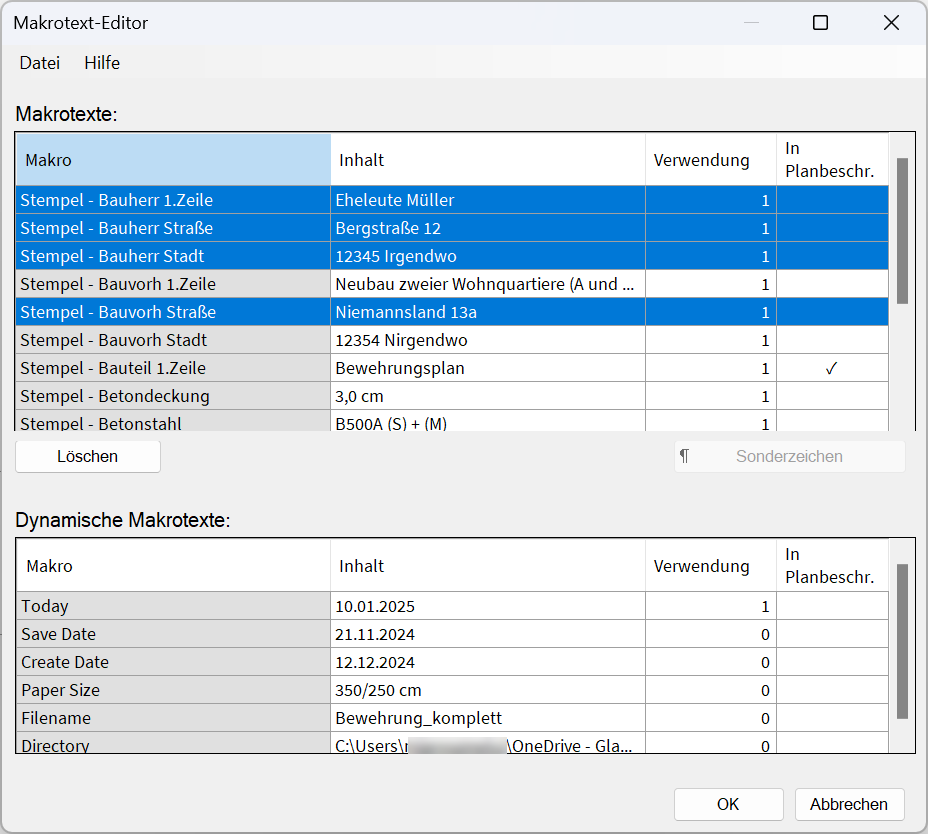 |
§Öffnen oder wechseln Sie zu Excel und klicken Sie eine Tabellenzelle für die Einfügeposition an.
§Nutzen Sie die Einfügefunktion oder drücken Sie Strg+V, um die Makrotexte einzufügen.
Die Makrotexte werden ohne Leerzeilen eingefügt.
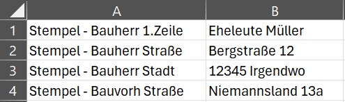 |
Makrotexte aus Excel importieren
Sie können Makrotexte in Excel definieren und sie in die Liste benutzerdefinierter Makrotexte einfügen.
§Legen Sie die Makrotexte in Excel an:
-Die Makrotext-Namen stehen dabei in einer Spalte (z. B. Spalte A), der zugehörige Textinhalt in der danebenliegenden Spalte (z. B. Spalte B).
-Nicht jedem Makrotext-Namen muss ein Textinhalt zugewiesen sein.
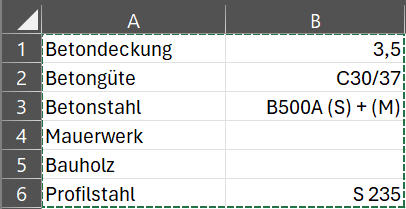 |
§Wählen Sie den Tabellenbereich aus, der übertragen werden soll, indem Sie ihn markieren.
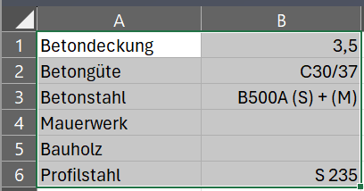 |
Wenn Sie nur Makrotext-Namen definiert haben, und diese übertragen möchten, markieren Sie auch die danebenliegenden leeren Zellen. Das Einfügen in den Makrotext-Editor ist nur möglich, wenn zwei Spalten (Maktotext-Name und Textinhalt) übertragen werden.
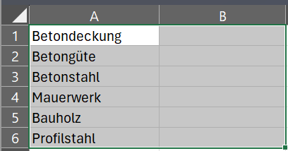 |
§Kopieren Sie den Bereich mit der Kopierfunktion oder drücken Sie Strg+C.
§Öffnen oder wechseln Sie zu ISBCAD und rufen Sie den Makrotext-Editor auf.
§Markieren Sie eine beliebige Zelle in der Spalte Makro.
Die einzufügenden Makrotexte werden ab der letzten (freien) Tabellenzeile eingefügt.
§Drücken Sie Strg+V, um die Makrotexte einzufügen.
-Die Makrotexte werden importiert und der Liste im Makrotext-Editor hinzugefügt.
-Bei doppelten Makrotext-Namen mit unterschiedlichen Textinhalten wird nur der zuerst gefundene Makrotext-Name mit seinem zugewiesenen Textinhalt eingefügt.
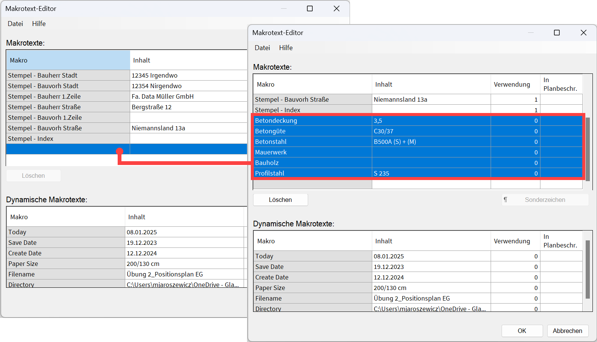 |
Konflikte bei Makrotexten auflösen
Wenn Sie Makrotexte in eine Zeichnung einfügen, in der bereits Makrotexte mit derselben Bezeichnung aber anderem Textinhalt definiert sind, können Sie die kollidierenden Makros anpassen. In der Spalte Aktueller Inhalt werden Ihnen die Textinhalte der Zeichnung angezeigt, in die Sie Makrotexte einfügen möchten. Unter Neuer Inhalt werden Ihnen die Textinhalte der einzufügenden Makrotexte angezeigt. Sind unter den einzufügenden Makrotexten neue Makrotexte, die nicht in der aktuellen Zeichnung vorhanden sind, werden sie der Liste der bestehenden Makrotexte angehängt.
§Wählen Sie, ob die aktuellen Inhalte beibehalten werden sollen, oder ob sie durch die neuen Inhalte ersetzt werden sollen. Aktivieren Sie dazu im unteren Dialogbereich die entsprechende Option.
|

§Klicken Sie auf Weiter, um den Import fortzusetzen, oder klicken Sie auf Abbrechen, um ihn abzubrechen.
Die Textinhalte werden übernommen und in der Zeichnung aktualisiert, falls die neuen Inhalte übernommen wurden.
Optionen im Dialog "Makrotext-Editor"
Datei
Makrotexte exportieren
Öffnet den Dialog Makrotexte exportieren zum Speichern der Makrotext-Liste und der zugewiesenen Textinhalte in einer isbmakro-Datei.
Makrotexte importieren
Öffnet den Dialog Makrotexte importieren zur Auswahl einer isbmakro-Datei.
Hilfe
Hilfe zu Makrotexten
Ruft diese Hilfe-Seite auf.
Makrotexte
Makro
Zeigt die definierten Makrotexte an.
Inhalt
Zeigt die definierten Textinhalte an.
Verwendung
Zeigt an, wie oft der Makrotext in der Zeichnung vorhanden ist.
In Planbeschreibung
Ist der Haken gesetzt, wird der Makrotext in der Planbeschreibung verwendet.
Löschen
Entfernt den oder die markierten Makrotexte.
Sonderzeichen
Öffnet den Eingabe-Dialog für Sonderzeichen.
OK
Übernimmt alle Änderungen und schließt den Dialog.
Abbrechen
Verwirft alle Änderungen und schließt den Dialog.
Dynamische Makrotexte
Siehe: Dynamische Makrotexte (Referenz)
Siehe auch:
·Makrotexte in die Zeichnung einfügen
·Makrotexte in die Planbeschreibung einfügen
·Text in Makrotext konvertieren oder Zuweisung auflösen
·Darstellung von Makrotexten in der Zeichnung (Systemdaten)
Zugehörige Referenzen: